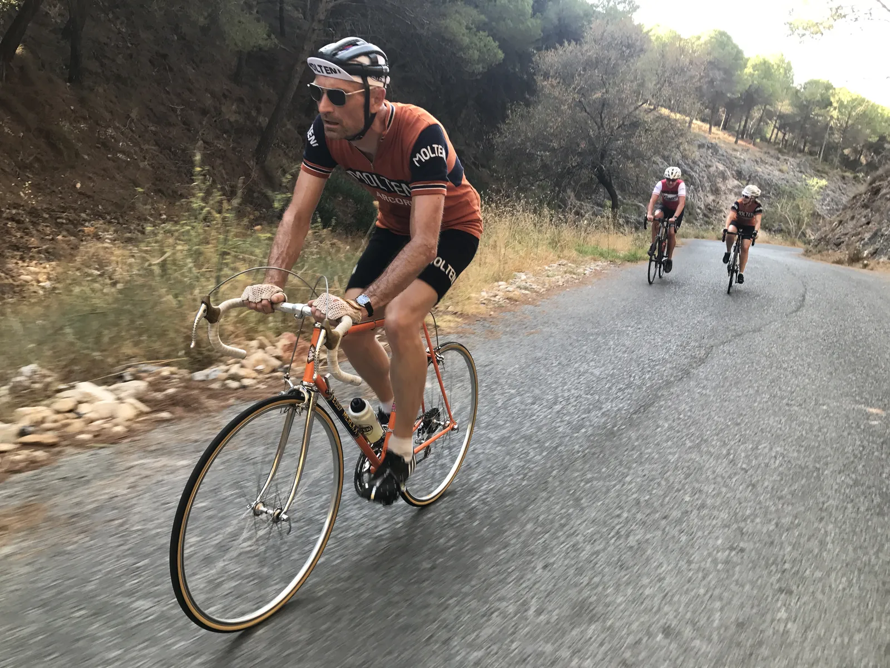
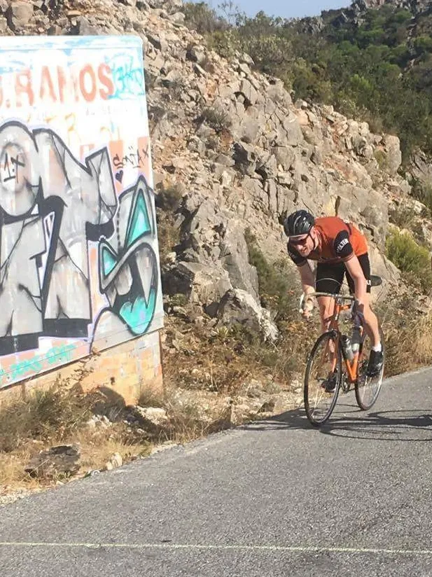
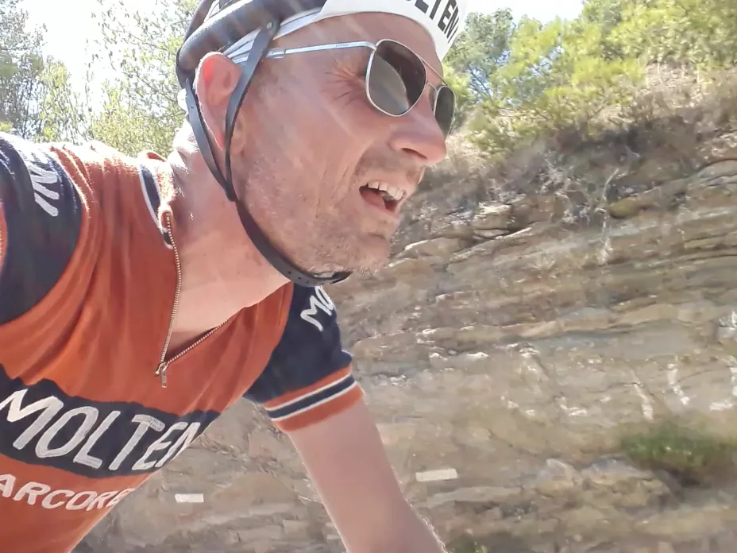

1. Etape: Doping, Drama og Donna Maria på overarbejde

1 etape af La Acero Vuelta 17 blev en klassisk deletape på hhv. 120 km. og 135 km. med 4000 højdemeter. Det blev en højdramatisk – nærmest livsfarlig dag – hvor stigningerne startede lige efter feltet med de 22 tomandshold var kørt ud af skolegården.
De to deletaper gik over 2 klassiske kategori HC bjerge: Subida Repitidore (13 km, á 8,9%) og Montes de Málaga 16 km á 7%). Dertil kom en intermediate sprint hvor der kunne hentes dyrebare sekunder til det samlede klassement.
Efter en højdramatisk etape er Bjørnsteen og Sørensen rykket op på en samlet 2. plads.
Etapa 1a, Malaga – Subida Repitidore (120 km – 36,6 km/t.)
Starten gik stille og roligt, men da feltet rammer den sidste stigning, bliver der givet gas.
– Planen var, at Kasper skulle stikke tidligt på Subida Repitidore, mens jeg skulle tage mig af Montes de Málaga, fortæller Kaptajn Bjørnsteen.
Kasper lagde ud som lyn og torden – og fortsatte det hårde tempo. Selvom Subida Repitidore flere steder stiger over 15% flere kilometer af gangen, tonsede Kasper afsted på hjul af en Pearl Izumi rytter.

Forrest lå en gruppe på to mand, som var kørt i forvejen, men det var helt efter planen ifølge Kasper.
– Kort før starten bliver jeg informeret af vores lokale bekendte, Manolo Saiz, at der vil være dopingkontrol. Altså top-tre på etapen bliver testet, og dermed skal jeg blot køre en anonym fjerdeplads hjem, udtaler Kasper.
Her til aften kom svaret: Alle tre positive og, Kasper vinder dermed etapen. De tre uheldige ryttere bliver idømt en tidsstraf på 23 sekunder og en bøde på 34.000 pesos.

Forbrudt sig mod de uskrevne regler
– Det er fuldstændig fortjent. En ting er, at de har fået lidt til næsen, eller hvad det nu er, man tager i Kolding nu til dags, men derudover, så er de også mødt op i form. Alle ved, at man ikke møder op til en Grand Tour i form – det er noget man kører sig til, udtaler en tydelig bitter Kasper Sørensen.
Etapa 1b, Subida Repitidore – Malaga (106 km – 37,3 km/t.)
Anden deletape startede med 90 km. i fladt terræn, hvor der var indlagt en intermedia-sprint, og sluttede med den 16 km. lange lede Montes de Málaga.
Rutekortet havde tydeligt markeret intermediate sprinten efter 55 km., men arrangørerne havde igen fået lidt for meget sangria, og den kom altså først efter 73 km. Squadra Molteni kom altså ud i noget, der minder om verdens længste lead-out – noget vi p.t. arbejder på at få optaget i Guinness Rekordbog.
– Arrangørerne havde på etapekortet placeret intermedia-sprint ved en lille by, men i virkeligheden lå sprinten midt i en stor rundkørsel. Det skabte naturligvis stor kaos i feltet, men Bjørnsteen var iskold og fik kørte sig frem til en 2. plads, fortæller Løjtnant Kasper.
Finalen på Montes de Malaga
Allerede kort før feltet ramte Montes de Málaga startede dramaet. Kasper meldte, at han havde begyndende kramper og smerter i begge ben. Men Kasper ignorerede smerterne – det skulle dog senere vise sig, at blive tæt på katastrofalt.
Bjørnsteen var flyvende og lagde sig i frontgruppen. Den lange stigning passede ham perfekt – og med 1500 meter til toppen stikker han – og kan køre alene over stregen som vinder af anden deletape.

Længere nede gik det (næsten) helt galt for Kasper
Kaspers kramper bliver værre, og i ca. 5000 meters højde og med 3,5 km. til mål, begynder blodets også at størkne. Hæmatokritværdien er tæt på de 65, og Maria må på overarbejde. Pastor Mogensen, dirigerer hende ind til en café, hvor hun tapper tre liter saltvand fra poolen, og begynder at håndpumpe det direkte ind i Kaspers årer.
Hæmatokritten daler, men Kasper må opgive at fortsætte. En ærgelig DNF fra dette års La Acero Vuelta.
Men på nedkørslen kommer en spansk kommissær pludselig op på siden af Niels Bjørnsteen, der ligger sammen med en slukøret Kasper.
– Det viser sig ved en finopmåling, at Kasper er stået af 2,9 km. fra målstregen, og dermed er lige inden for 3 kilometerporten. Kommissæren fortæller mig at Kasper derfor vil få samme tid som vinderen, hvilket jo er helt fantastisk for holdkonkurrencen, fortæller Niels Bjørnsteen.
Maria får også sammet tid, og fører dermed også sin klasse med et hæderligt forspring.
9,5 Timers transfer
Efter etapen blev der fyldt på depoterne, før chauffør Ivanovic og hans lejesvend kom og hentede cykler og ryttere. Forud ventede en 9,5 timer lang transfer i selskab med en russisk lejemorder, og et billigt mixbånd.
– Heldigvis havde Pastor Mogensen sørget for øl og trætte ben, så der blev ikke sagt så meget, fortæller Niels, der netop er tjekket ind på hotellet.
Top tre efter 1. etape:
1. Miguel og Miguel, Spanien
2. Bjørnsteen og Sørensen, Squadra Molteni
3. Heniz und Schmidt, Tyskland